✦⭑ GUTS ⭑✦
O que é o álbum GUTS?
Lançado no dia 8 de setembro de 2023, o álbum GUTS marca o início de uma nova fase da cantora Olivia Rodrigo e o nome do projeto foi escolhido quando ela ainda estava desenvolvendo seu disco anterior: “Eu tinha isso na minha cabeça, de serem quatro letras, em caixa alta, assim como o SOUR. Eu amei. Eu acho que é uma palavra interesse. As pessoas a usam em tantos contextos interessantes.” “Eu acho que é um termo realmente interessante. Significa coragem, mas também significa intuição, como: 'Ouça seu instinto.'" Acho que todas essas coisas são as que, coincidentemente, estive pensando nesse capítulo.", Olivia comenta em uma entrevista.
Músicas
O álbum GUTS contém 12 faixas na sua versão padrão. Na versão deluxe GUTS, lançada posteriormente, o álbum passa a contar com 17 faixas (incluindo as faixas bônus).
- all-american bitch
- bad idea right?
- vampire
- lacy
- ballad of a homeschooled girl
- making the bed
- logical
- get him back!
- love is embarrassing
- the grudge
- pretty isn't pretty
- teenage dream
- obsessed
- girl i've always been
- scared of guitar
- stranger
- so american

Capa do álbum
✦⭑ MÚSICAS ⭑✦
all-american bitch
A música"all-american bitch" ou "vadia toda americana" é a primeira faixa do álbum GUTS, essa música possui um ritmo pesado com uma guitarra de fundo, porém também possui trechos calmos. Ela é uma crítica às pressões impostas sobre as mulheres, na qual a sociedade exige delicadeza por parte delas e ao mesmo tempo que sejam inabaláveis. Ao decorrer da música podemos perceber que os trechos explosivos acabam aumentando, mostrando a raiva interior que ela reprime. A música termina com um ritmo extremamente suave, reforçando ainda mais essa repressão.

bad idea right?
Em "bad idea right?", Olivia Rodrigo aborda o dilema de retomar contato com um ex de forma leve e divertida, fugindo do drama tradicional. A música se destaca pelo tom autodepreciativo e pelo humor, mostrando a protagonista consciente de que está tomando uma decisão ruim, mas ainda assim se permitindo ceder à tentação. origem da música, criada a partir de uma brincadeira entre Olivia e o produtor Dan Nigro, explica o tom irônico das letras. Frases como “I only see him as a friend / The biggest lie I ever said” (Eu só vejo ele como amigo / A maior mentira que já contei) e “I just tripped and fell into his bed” (Eu só tropecei e caí na cama dele) usam exagero e negação para ironizar as desculpas que as pessoas inventam para justificar recaídas amorosas.

vampire
Em “vampire”, Olivia Rodrigo utiliza a figura do vampiro para retratar um relacionamento tóxico, indo além do clichê ao transformar o parceiro em um predador emocional. A letra mistura sarcasmo e autocrítica, especialmente quando Olivia reconhece que também julgou outras garotas por alertarem sobre o rapaz: “You called them crazy, God, I hate the way I called 'em crazy too” (“Você as chamou de loucas, Deus, eu odeio o fato de eu também ter chamado elas de loucas”). Ela não poupa críticas ao ex-parceiro, mas também admite sua ingenuidade.
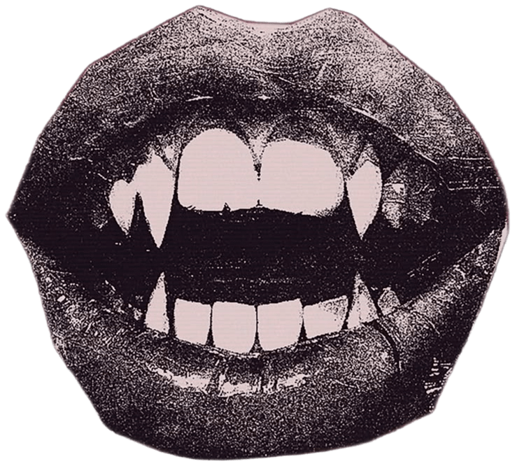
lacy
Em “lacy”, Olivia Rodrigo explora como a admiração intensa pode se transformar em autocrítica e inveja. A artista descreve Lacy com imagens delicadas, como “skin like puff pastry” (pele como massa folhada) e “eyes white as daisies” (olhos brancos como margaridas), revelando um fascínio quase obsessivo. Ao mesmo tempo, Rodrigo expõe o desconforto de se comparar constantemente, confessando que não se sente bem diante dessa idealização.
ballad of a homeschooled girl
Em "ballad of a homeschooled girl", Olivia Rodrigo transforma situações comuns de desconforto social em um relato intenso, mas também carregado de autodepreciação e humor. A repetição da expressão "social suicide" (suicídio social) mostra como pequenos erros e gafes ganham proporções dramáticas em sua mente, refletindo o medo constante de julgamento.
making the bed
Em “making the bed”, Olivia Rodrigo explora de forma honesta a autocrítica e a responsabilidade pessoal diante das próprias escolhas. O título e o refrão — “it’s me who’s been making the bed” (“sou eu quem tem arrumado a cama”) — funcionam como uma metáfora clara: ela reconhece que é responsável pelas situações desconfortáveis e sentimentos de insatisfação que enfrenta, mesmo após alcançar o sucesso.
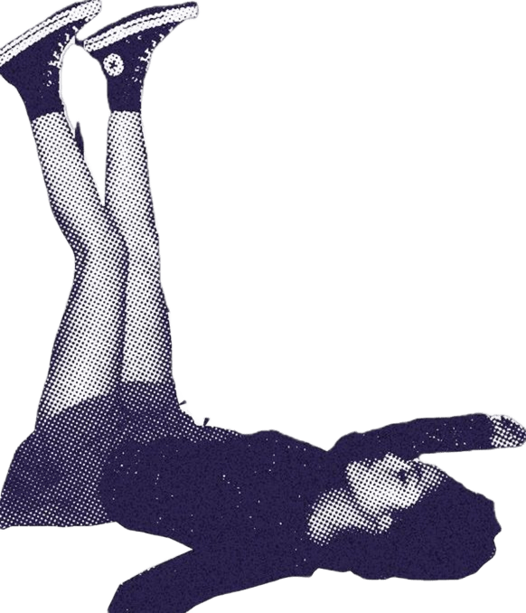
logical
Em "logical", Olivia Rodrigo explora como a manipulação emocional pode distorcer até as verdades mais simples, levando a protagonista a duvidar da própria percepção. A frase “two plus two equals five” (dois mais dois é igual a cinco) é usada como metáfora para mostrar o poder do parceiro em convencer a personagem de mentiras óbvias, destacando o tema central da música: a irracionalidade do amor e a dificuldade de enxergar a toxicidade de um relacionamento enquanto se está envolvido nele.
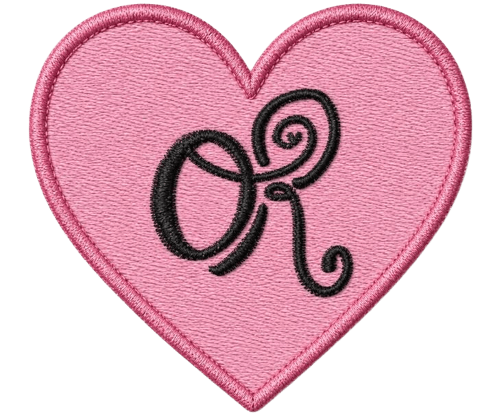
get him back!
Em "get him back!", Olivia Rodrigo explora o duplo sentido do título, brincando com a ideia de querer o ex-namorado de volta e, ao mesmo tempo, desejar se vingar dele. A letra também destaca as falhas do ex, como o ego inflado, o temperamento difícil e as traições, mas não ignora a saudade dos momentos bons, como festas e viagens inesperadas. O videoclipe amplia essa dualidade ao mostrar várias versões de Olivia destruindo a casa do ex, ilustrando visualmente a mistura de desejo de vingança e vontade de reatar. Assim, a música mostra que, muitas vezes, a melhor resposta é se divertir com a própria confusão e não esconder as emoções conflitantes.

love is embarrassing
Em "love is embarrassing", Olivia Rodrigo aborda de forma direta e irônica o constrangimento que acompanha os fracassos amorosos. A letra destaca como o amor pode ser motivo de vergonha, especialmente ao percebermos, com o tempo, o quanto nos rebaixamos por pessoas que não mereciam. O refrão, com a frase "love's fucking embarrassing" (o amor é muito constrangedor), reforça a universalidade e o absurdo dessas experiências.
the grudge
Em "the grudge", Olivia Rodrigo transforma um amor intenso em ressentimento, mostrando como a mágoa pode distorcer até os sentimentos mais sinceros. O verso “My undying love, now I hold it like a grudge” (“Meu amor imortal; agora, eu o guardo como um ressentimento”)revela essa mudança, enquanto “It takes strength to forgive, but I don't feel very strong” (É preciso força para perdoar, mas não me sinto muito forte) sintetiza a luta interna entre o desejo de superar e a dificuldade de perdoar. Segundo a própria artista, esse verso foi o ponto de partida para a composição, destacando a vulnerabilidade e honestidade emocional presentes na canção.
pretty isn't pretty
A música "pretty isn't pretty" de Olivia Rodrigo (do álbum GUTS) é uma reflexão crua e honesta sobre pressão estética, insegurança e a busca exaustiva por padrões de beleza inatingíveis impostos pela sociedade e pelas redes sociais. A letra aborda a pressão para se conformar a ideais de beleza impossíveis de alcançar, destacando a internalização desses padrões e suas consequências negativas sobre a autoestima e o bem-estar emocional.
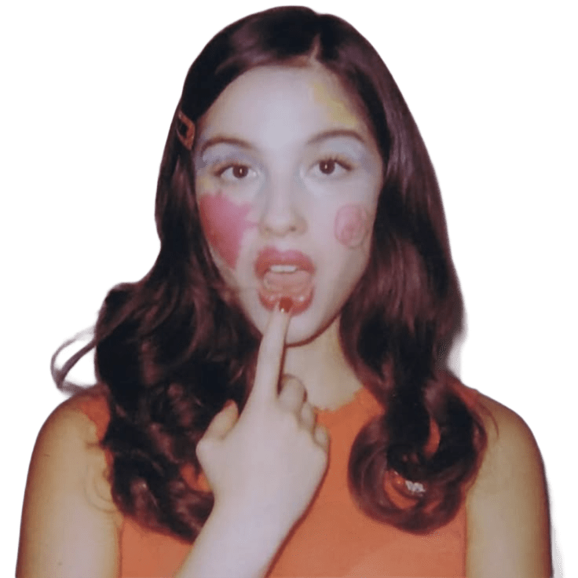
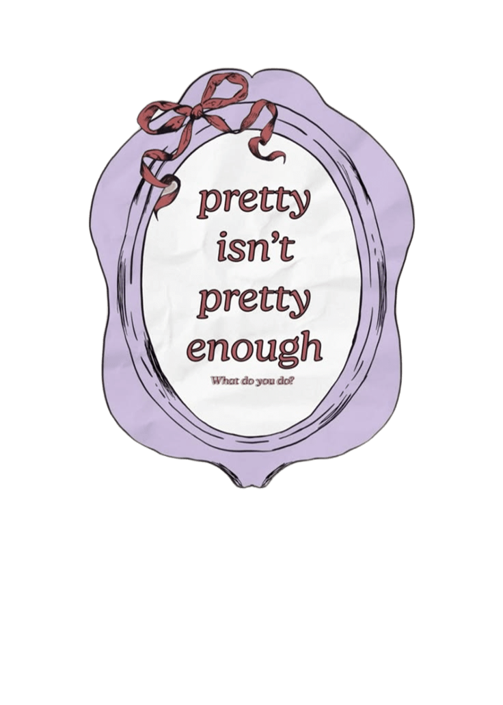
teenage dream
Olivia Rodrigo escolheu manter o título “teenage dream” mesmo sabendo da forte associação com o sucesso de Katy Perry. Essa decisão revela sua intenção de dialogar com o conceito tradicional do “sonho adolescente”, mas sob uma perspectiva diferente. Enquanto Katy Perry celebrou a liberdade e o romance da juventude, Rodrigo expõe as inseguranças e o peso das expectativas que acompanham o crescimento, especialmente sob a pressão da fama. A música funciona como uma continuação direta de “brutal”, do álbum anterior, onde Rodrigo questionava a ausência do tão prometido sonho adolescente.
obsessed
A música "obsessed" de Olivia Rodrigo aborda de forma direta como a insegurança pode se transformar em uma obsessão pela ex-namorada do parceiro. A letra mostra que a personagem não apenas sente ciúmes, mas mergulha em uma comparação constante, chegando ao ponto de saber detalhes íntimos da ex, como signo e tipo sanguíneo. Esse comportamento revela uma busca incessante por entender e talvez superar a ex, mesmo sabendo que isso é impossível.
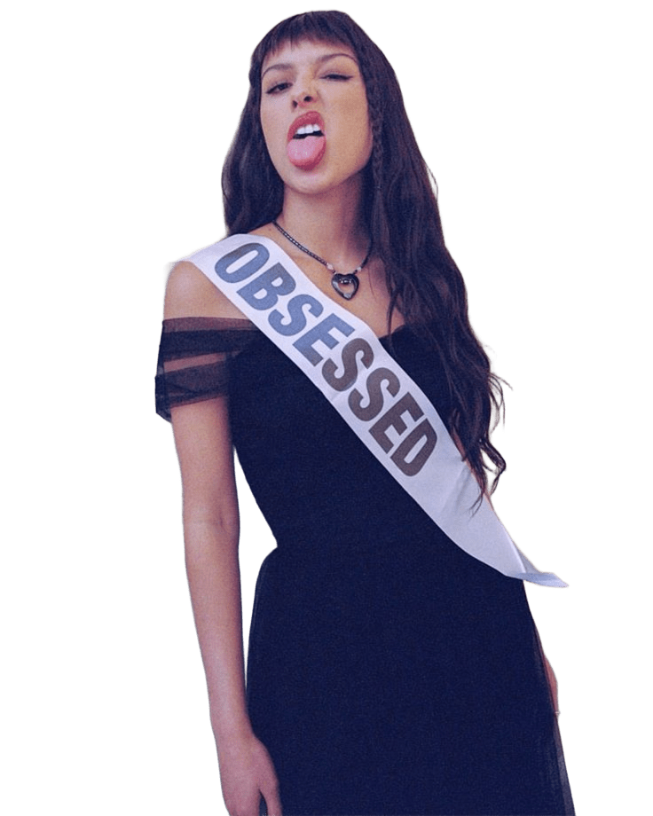
girl i've always been
Em “girl i've always been”, Olivia Rodrigo aborda a pressão de ser julgada e acusada de ter mudado, especialmente diante de conflitos e expectativas externas. A metáfora “I'm a candle in the wind” (“Sou uma vela ao vento”) destaca sua vulnerabilidade diante das pressões, mas também sua resistência em não se deixar apagar. Com uma letra honesta e uma sonoridade folk-pop introspectiva, Olivia constrói um retrato sincero das inseguranças e da força de manter a própria identidade em meio ao caos dos relacionamentos e da fama.
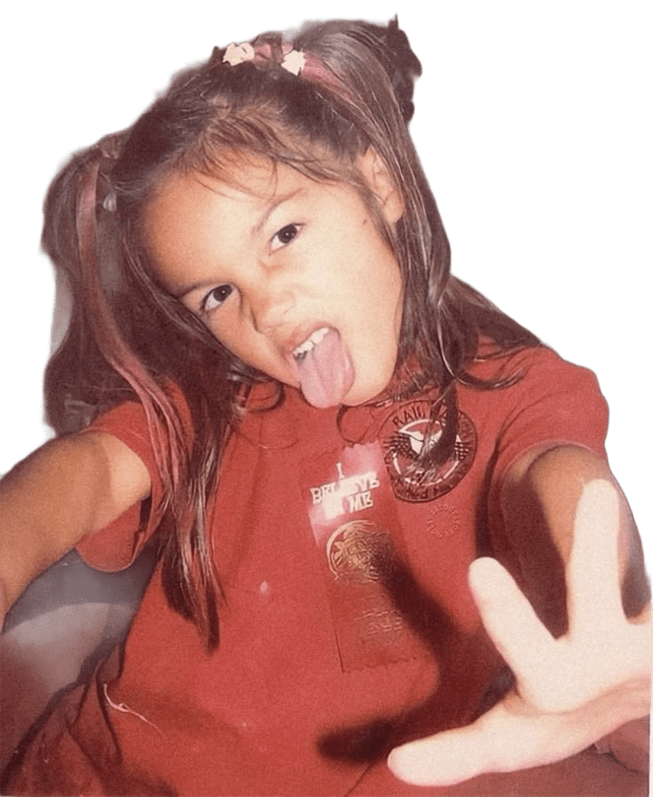
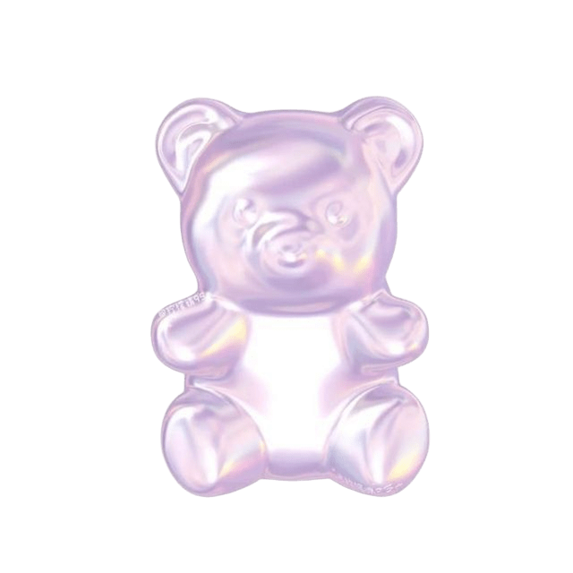
scared of my guitar
Em “scared of my guitar”, Olivia Rodrigo usa a guitarra como símbolo do confronto com suas próprias emoções. O medo de tocar o instrumento não é literal, mas representa o receio de encarar sentimentos verdadeiros sobre seu relacionamento. A produção minimalista, centrada no violão, reforça a sensação de intimidade e exposição emocional. Assim, a música vai além de um desabafo amoroso, explorando o conflito entre honestidade e conforto, e mostrando como a arte pode ser um caminho para o autoconhecimento.
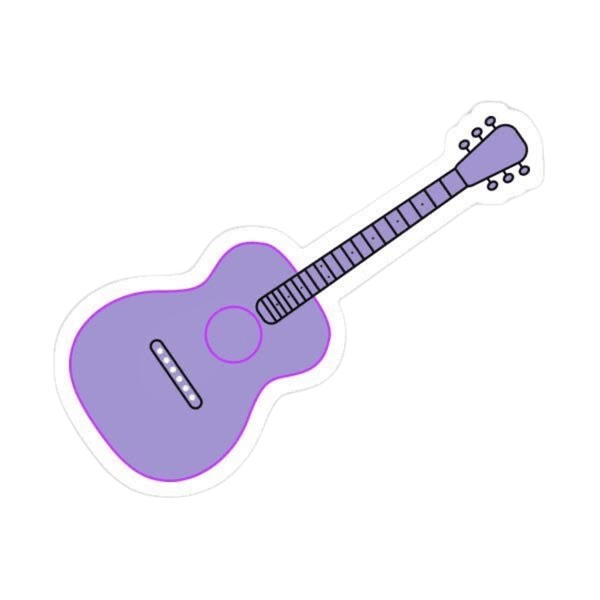
stranger
Em "stranger", Olivia Rodrigo explora o processo de superação de um relacionamento, mostrando que seguir em frente vai além de simplesmente esquecer alguém. A frase “you’re just a stranger I know everything about” (você é só um estranho sobre quem sei tudo) destaca como a percepção sobre o ex-parceiro muda completamente: alguém que já foi tão íntimo agora parece distante, quase irreconhecível.
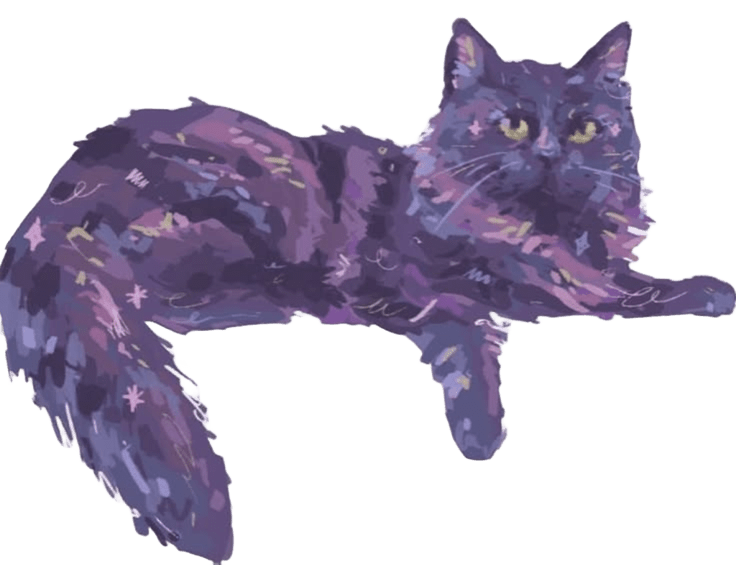
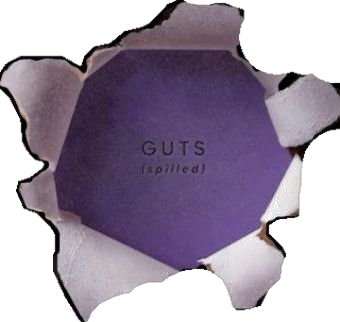
so american
“so american” marca uma mudança no repertório de Olivia Rodrigo, que até então era associada a músicas sobre desilusões amorosas. Nesta faixa, ela explora o entusiasmo de um novo relacionamento, destacando as pequenas diferenças culturais de forma leve e divertida. A música gira em torno do olhar estrangeiro sobre o jeito "americano" de ser, evidenciado quando o parceiro repete que ela é “so American”. Esse comentário funciona como um elogio íntimo, mostrando como as particularidades culturais se tornam atraentes no contexto do romance.
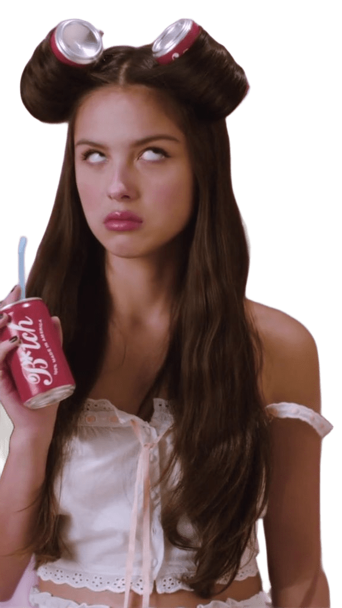
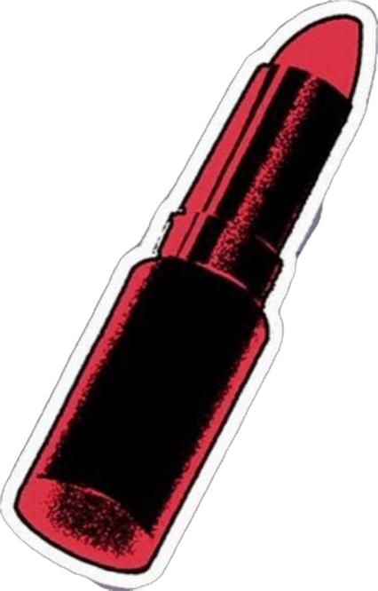
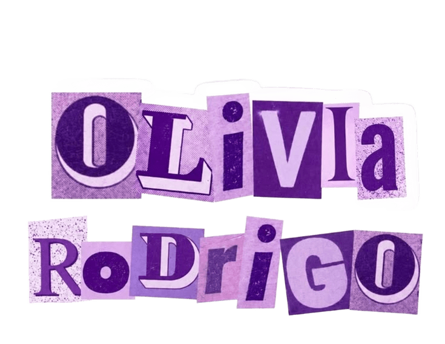